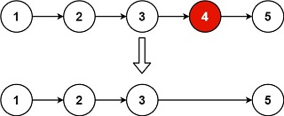

Remove Nth Node From End of List
Problem statement
Given the head of a linked list, remove the n-th node from the end of the list and return its head.
Example 1

Input: head = [1,2,3,4,5], n = 2
Output: [1,2,3,5]
Example 2
Input: head = [1], n = 1
Output: []
Example 3
Input: head = [1,2], n = 1
Output: [1]
Constraints
- The number of nodes in the list is
sz. 1 <= sz <= 30.0 <= Node.val <= 100.1 <= n <= sz.
Follow up
- Could you do this in one pass?
Solution 1: Store the nodes
Code
#include <iostream>
#include <vector>
struct ListNode {
int val;
ListNode *next;
ListNode() : val(0), next(nullptr) {}
ListNode(int x) : val(x), next(nullptr) {}
ListNode(int x, ListNode *next) : val(x), next(next) {}
};
using namespace std;
ListNode* removeNthFromEnd(ListNode* head, int n) {
vector<ListNode*> nodes;
ListNode* node = head;
while (node)
{
nodes.push_back(node);
node = node->next;
}
node = nodes[nodes.size() - n];
if (node == head) {
// remove head if n == nodes.size()
head = node->next;
} else {
ListNode* pre = nodes[nodes.size() - n - 1];
pre->next = node->next;
}
return head;
}
void printList(const ListNode *head) {
ListNode* node = head;
cout << "[";
while (node) {
cout << node->val << ",";
node = node->next;
}
cout << "]\n";
}
int main() {
ListNode five(5);
ListNode four(4, &five);
ListNode three(3, &four);
ListNode two(2, &three);
ListNode one(1, &two);
auto head = removeNthFromEnd(&one, 2);
printList(head);
head = removeNthFromEnd(&five, 1);
printList(head);
head = removeNthFromEnd(&four, 1);
printList(head);
}
Output:
[1,2,3,5,]
[]
[4,]
This solution uses a vector to store pointers to all nodes in the linked list, enabling easy access to the node to be removed and its predecessor.
By iterating through the linked list and storing pointers to each node in the vector, it constructs a representation of the linked list in an array-like structure. Then, it retrieves the node to be removed using its index from the end of the vector. Finally, it handles the removal of the node by updating the next pointer of its predecessor or updating the head pointer if the node to be removed is the head of the linked list.
This approach optimizes the computation by sacrificing space efficiency for simplicity of implementation and ease of manipulation of linked list elements.
Complexity
- Runtime:
O(N), whereNis the number of nodes in the list. - Extra space:
O(N).
Solution 2: Two pointers
The distance between the removed node and the end (nullptr) of the list is always n.
You can apply the two-pointer technique as follows.
Let the slower runner start after the faster one n nodes. Then when the faster reaches the end of the list, the slower reaches the node to be removed.
Code
#include <iostream>
#include <vector>
struct ListNode {
int val;
ListNode *next;
ListNode() : val(0), next(nullptr) {}
ListNode(int x) : val(x), next(nullptr) {}
ListNode(int x, ListNode *next) : val(x), next(next) {}
};
using namespace std;
ListNode* removeNthFromEnd(ListNode* head, int n) {
ListNode* fast = head;
// let fast goes ahead n nodes
for (int i = 0; i < n; i++) {
fast = fast->next;
}
if (fast == nullptr) {
// remove head if n equals the list's length
return head->next;
}
ListNode* slow = head;
while (fast->next) {
slow = slow->next;
fast = fast->next;
}
// remove slow
slow->next = slow->next->next;
return head;
}
void printList(const ListNode *head) {
ListNode* node = head;
cout << "[";
while (node) {
cout << node->val << ",";
node = node->next;
}
cout << "]\n";
}
int main() {
ListNode five(5);
ListNode four(4, &five);
ListNode three(3, &four);
ListNode two(2, &three);
ListNode one(1, &two);
auto head = removeNthFromEnd(&one, 2);
printList(head);
head = removeNthFromEnd(&five, 1);
printList(head);
head = removeNthFromEnd(&four, 1);
printList(head);
}
Output:
[1,2,3,5,]
[]
[4,]
Complexity
- Runtime:
O(N), whereNis the number of nodes in the list. - Extra space:
O(1).
Conclusion
Solution 2 uses two pointers, a fast pointer and a slow pointer, to remove the nth node from the end of a linked list.
Initially, both pointers start from the head of the list. The fast pointer moves n steps ahead, effectively positioning itself n nodes ahead of the slow pointer. Then, while the fast pointer is not at the end of the list, both pointers move forward simultaneously. This ensures that the slow pointer stays n nodes behind the fast pointer, effectively reaching the node preceding the nth node from the end when the fast pointer reaches the end of the list. Finally, the nth node from the end is removed by updating the next pointer of the node preceding it.
This approach optimizes the computation by traversing the linked list only once and using two pointers to efficiently locate the node to be removed.